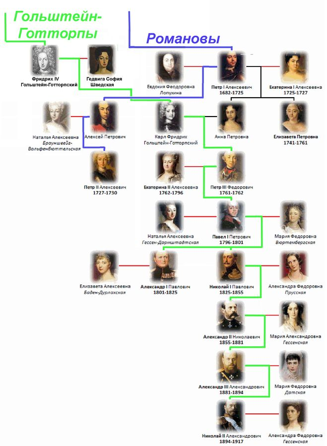

Прямая ветвь рода Романовых на всероссийском престоле пресеклась после смерти императрицы Елизаветы Петровны; с 5 января 1762 года императорский престол перешёл по женской линии к Гольштейн-Готторп-Романовской династии, сыну царевны Анны Петровны и герцога Карла-Фридриха Гольштейн-Готторпского, по династическому договору их сын Карл Петер Ульрих Гольштейн-Готторпский (будущий император всероссийский Пётр III) признавался членом императорского Дома Романовых. Таким образом, по генеалогическим правилам императорский род (династия) именуется Гольштейн-Готторп-Романовской.
